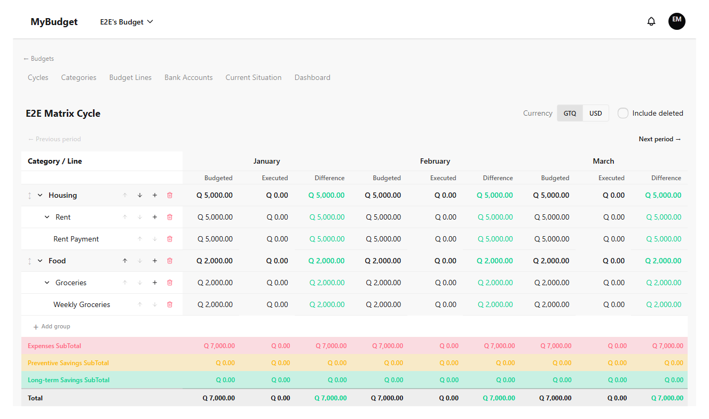
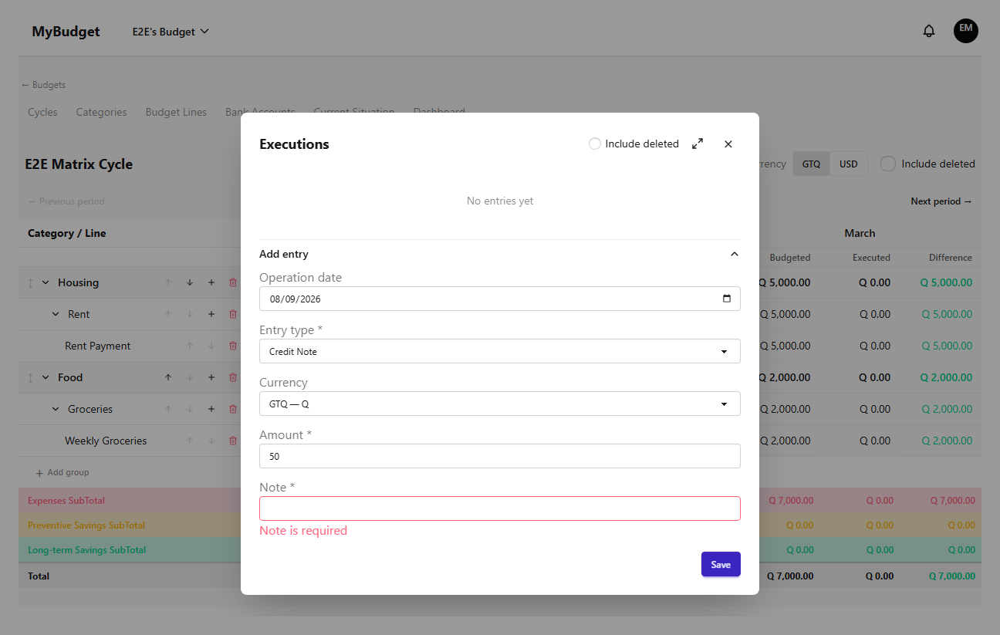
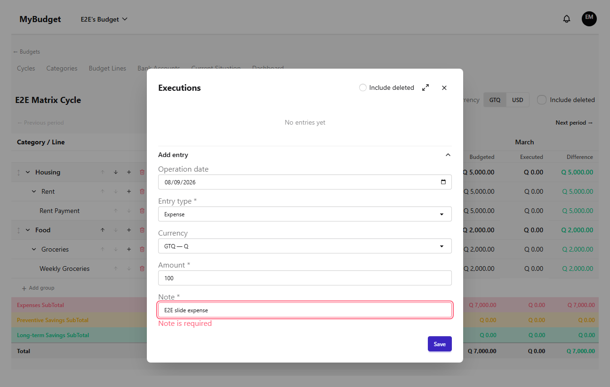
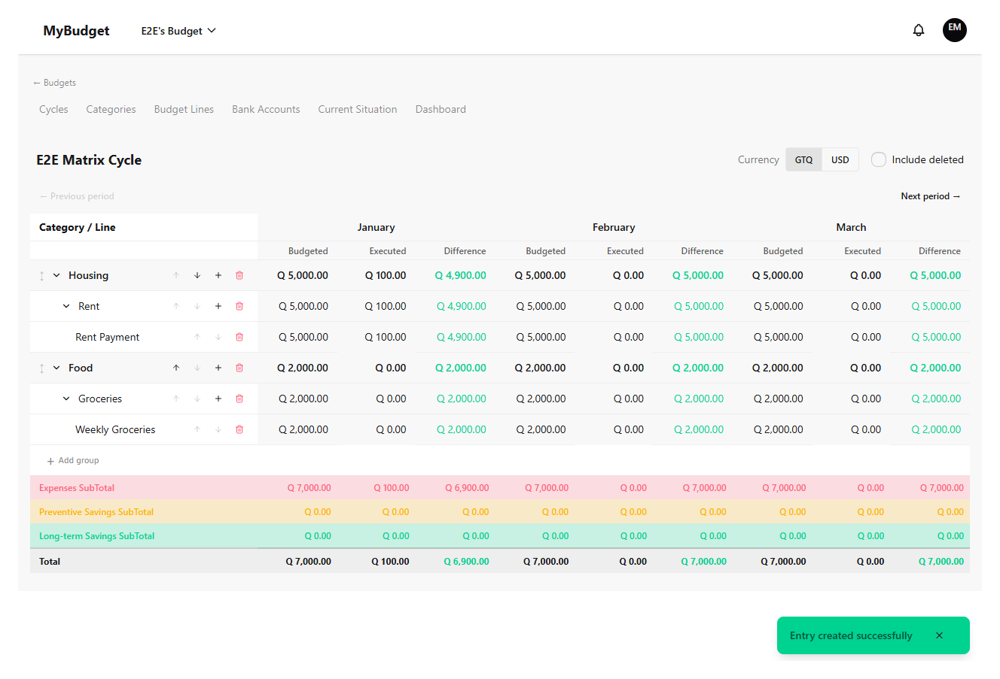
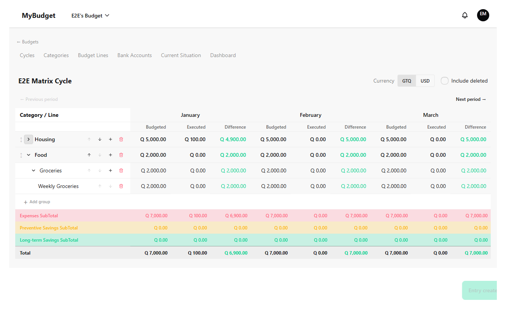

Matrix & execution
The execution matrix is where planning turns into tracking: it lays out every budget line against every period of the current cycle, and lets you record what you actually spent, one entry at a time. This chapter covers reading the matrix, recording and managing execution entries, switching the display currency, and collapsing groups for a denser view.
Reading the matrix
Rows are nested by category group, then category, then budget line — the same structure you set up in the Categories and Periods & budget lines chapters. Each visible period gets three columns: Budgeted (the line's planned amount for that period), Executed (the sum of its execution entries), and Difference. Use the prev/next arrows above the table to move between periods; the label column stays pinned on the left as you scroll horizontally.

Recording an execution
Double-click a line's Executed cell for the period you want to record against — that opens a modal listing existing entries for that line and period, with an add form below it. Every entry has a type (Expense, Credit Note, or Debit Note), an amount, an operation date, and a note. The note is mandatory for every entry type, no exceptions — leaving it blank is rejected before the request even reaches the server.


Once saved, the entry shows up in the modal's list and the line's Executed total updates immediately — no need to close the modal and reopen it.

Editing, deleting, and restoring entries
Each entry in the list has its own edit and delete controls, visible to operators, admins, and the owner. Deleting is a two-step action — a first click arms a confirmation, a second one removes the entry — to avoid an accidental single-click delete on what is, after all, money tracking. Once a period is closed, new edits and deletes are locked, but a deleted entry can still be restored even then, so a mistake made just before closing a period isn't permanently stuck.
Switching the display currency
If a cycle has an alternate currency configured, the controls bar above the matrix lets you toggle the whole matrix between the cycle's default currency and that alternate one, converted at the cycle's exchange rate. The rate itself is editable right there — unless every visible period is closed, in which case it's locked to avoid rewriting a rate that already produced closed-period totals.
Collapsing groups for a denser view
A cycle with many categories and lines can make for a tall table. Collapsing a category group hides its category and line rows while keeping the group's own row (and its subtotal) visible — useful when you only need to check totals for most groups and drill into one or two. Categories collapse the same way, independently of their parent group.
